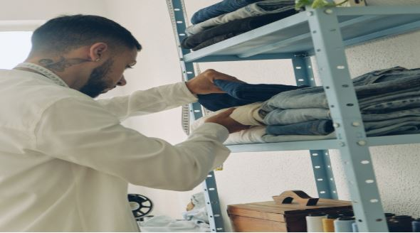

A simplicidade está se tornando cada vez mais uma tendência, e o guarda-roupa masculino minimalista está ganhando destaque. Ter um guarda-roupa minimalista significa ter menos peças, porém, muito mais versatilidade. Uma otimização que não apenas economiza dinheiro, mas também contribui para uma imagem elegante...
Vamos explorar os princípios por trás da criação desse tipo de guarda-roupa com essa pegada minimalista, destacando como montar um guarda-roupa EFICIENTE, em todas as fases da sua vida, com o mínimo de esforço mental e financeiro, fazendo aquele estilo básico que funciona!
Antes de mergulharmos nos segredos por trás da mente minimalista, ou , ainda, nos
apressarmos em comprar coisas que nunca vamos usar de uma listinha qualquer de peças essenciais, é
importante entender o motivo pelo qual um guarda-roupa minimalista faz sentido.
Aqui estão algumas razões:
- Menos estresse mental:
- Economia Financeira:
- Criar sua marca pessoal:
Um guarda-roupa minimalista elimina a confusão e a desordem, tornando a escolha diária de roupas mais simples.
Ter um número menor de peças porém com alta qualidade, pode ser mais econômico a longo prazo, pois você investe em itens duráveis que não precisam ser substituídos constantemente. O que por consequência, vai permitir que você invista mais o seu dinheiro na construção do seu patrimônio. Isso sim é importante!
Com menos peças, é mais fácil manter um estilo pessoal consistente. Aumente a chance de as pessoas comprarem bons presentes para você, uma vez que essas pessoas vão conhecer melhor aquilo que você gosta.
Talvez seja a hora de fazer aquela faxina na sua vida, começando pelo seu armário. Aquele momento de virada, dando uma guinada no seu estilo pessoal e deixando para trás tudo aquilo que não faz sentido e não condiz mais com a imagem que você decidiu transmitir ao mundo!
Esqueça o padrão! Esse negócio de definir uma listinha de itens padrão e sair comprando só porque você ouvir dizer que a lista x ou y do influenciador tal é a melhor, não vai te ajudar em nada!
Seu momento de vida é único, sua rotina é única e por isso lista pronta não funciona. É fundamental ajustar as roupas para a sua realidade!
Qual é o motivo de você ter um trambolho de um terno se na sua rotina normal você não vai ter que usar isso nunca?
A ideia aqui é trazer princípios a respeito do seu guarda-roupa e não uma lista do que comprar.
Em quais lugares você costuma ir ao longo da sua semana? E aos finais de semana? Entenda qual é a sua rotina, tente entender qual a necessidade de se vestir, de acordo com os lugares que você vai. Entenda qual seria o mínimo de peças necessárias para que você viva a semana, contabilizando o tempo de lavagem e reposição dessas peças de uma forma que não falte roupa para o próximo dia.
Se você quer viver de uma forma mais simples, NÃO INVENTA MODA!
Escolha suas peças priorizando as cores básicas: branco, preto, azul, cinza. Comece por aqui, e depois vá adicionando alguma coisa, caso sinta necessidade. A ideia aqui é ter versatilidade e errar o menos possível.
Obs.: Vai ser muito difícil errar com essas cores. O que pode variar aqui são os modelos, os tipos de roupa, pode ser uma blusa social ou uma regata, mas as cores ficam nessa paleta.
Vale a pena comprar poucas peças de qualidade para seu armário, do que uma montanha de quinquilharia que não dura um mês de uso!
É por isso que é tão importante entender qual é a sua rotina, só assim você vai conseguir entender qual é a sua real necessidade.
Mas ATENÇÃO!!!!!
Para investir em materiais de qualidade, não seja um idiota.Tenha o bom senso de saber se você REALMENTE precisa comprar esse item ou é o seu ego falando. A pessoa não tem uma calça jeans sem estar rasgada no fundilho, mas comprou um bom relógio, ou está com um perfume caro. Na vida de pessoas normais precisamos ter prioridades.
Sim, calças furadas, que revelam a cor de suas roupas íntimas, estão na frente de relógios ou perfumes. A sociedade não merece essa visão!
Outra loucura é investir dinheiro em tênis de origem duvidosa só porque ele replica uma marca impactante que você ainda não consegue ter em sua coleção. Outra vez o seu eguinho gritando por atenção! Pensa que seus calçados são responsáveis por reduzir o impacto do seu peso na caminhada do dia, (piora muito se o seu peso anda fora dos limites que seus joelhos deveriam suportar), isso influencia diretamente na sua postura, na sua coluna, na sua saúde!
Se a marca que você deseja não é compatível com seu bolso, procure um modelo que caiba no seu orçamento e que tenha o mínimo de qualidade técnica para suportar você e sua autoestima abalada.
Aqui é muito pessoal, a ideia é ajustar o seu guarda-roupas a um objetivo claro: sua nova imagem pessoal.
Não há certo nem errado, a questão aqui é você ter coerência com aquilo que você deseja transmitir a partir do momento em que você tomou uma decisão sobre sua imagem pessoal.
Jovenzão, Vovô-garoto, Pastor pentecostal, Esquerdo-Style, Faria Limer, Rock Star, não importa o estilo, mas procure ter uma coerência nas roupas e acessórios para que você aproveite seu guarda-roupa como um todo.
Se você determinou um caminho, seja coerente com as suas escolhas. Cada peça de roupa comunica alguma coisa, pense em qual tipo de comunicação você quer transmitir e ajuste suas escolhas a isso.
Não perca seu tempo e seu dinheiro com um monte de coisas diferentes e conflitantes, que não combinam entre si, isso vai trazer confusão para sua rotina e vai te fazer perder tempo e energia ajeitando isso. Por outro lado, se tudo o que estiver no seu armário for harmônico com o estilo desejado, todo esse processo será fluido, trazendo tranquilidade na hora que você sai do banho e vai encarar o novo dia!

Lembre-se que cada área da sua vida precisa estar em harmonia, conectada com as outras, para que seja possível construir uma vida saudável.
Cuidar do seu guarda-roupa gera consequências em suas finanças, autoestima, imagem pessoal e na forma como você se vê e é visto pelo mundo.
Até a próxima!